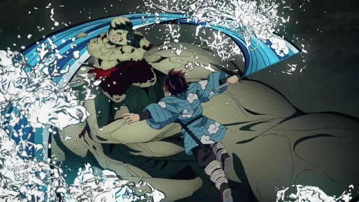

Disclaimer: This review covers the anime series "Demon Slayer - Kimetsu No Yaiba," airing in 2019, and its first 26 episodes.The anime industry in Japan is constantly looking for the next huge hit. Action shows that gain widespread popularity typically come from the Shonen Jump magazine: think "One Piece," "Naruto," or maybe "Fairy Tail" or "My Hero Academia." But then there are shows targeted at a slightly older audience due to its mature premise or violence: "Fullmetal Alchemist" and "Attack on Titan" are the behemoth hits that come to mind there. This doesn't include the several other long-running shows that try to reach such success, but fail. Anyway, a new franchise seems to become the new industry favorite every five to ten years, and "Demon Slayer - Kimetsu no Yaiba" has become the latest one as of 2020. I'm not yet certain exactly how popular the series is outside of Japan, but within Japan, it's a smash. With over 120 million copies of the manga in print at the time of this writing, it's considered to be one of the best-selling manga series of all time (and unlike other manga, it already reached its conclusion at 23 volumes, just within reach for newcomers to not be intimidated to begin collecting and reading it). A sequel to the 26-episode first season, in the form of a feature film covering the "Mugen Train" arc, became the biggest domestic box-office film in Japan, beating Studio Ghibli's "Spirited Away" (releasing at the end of 2020, this could have been in part due to a lack of competition and eagerness to see movies again, but that's still an impressive feat). In the US, Aniplex of America even gave in to a new experiment in its physical release: for the first time, it shared a Bluray release with Funimation (the two had recently been acquired as separate branches of the same parent company), where Aniplex would release their traditional limited-edition set, and Funimation would release a standard edition. It's a strategy I hope to see continue, as well as Aniplex slightly decreasing the retail price of their set compared to normal, a possible sign that a decade of exorbitant collector's editions in the US was finally reaching its limit (exactly how the company will read "Demon Slayer"'s sales is unclear though; the limited-edition's sales being too low or too high relative to the standard edition could be used as an excuse to turn back on the idea). Being a novice hypocrite, I did purchae the limited-editions, coming in a pair of beautiful rigid sets (beautiful relative to the domestic releases Aniplex USA usually puts out), showcasing the beautiful Japanese-inspired art on the box, each with 3-disc soundtracks, a small booklet and art cards. Perhaps the biggest point of excitement when the anime began airing was the studio: Ufotable, riding on the high-standard of visuals they perfected with "The Garden of Sinners" and Type-Moon's "Fate" franchise. With their work on "Fate" coming to a close, they needed to branch out into something else, and other attempts during that decade weren't as successful. But Ufotable, working on a shonen action series, a genre known for generally poor production quality over the course of hundreds of episodes? That was worth watching, and the execution proved it to be true."Demon Slayer"'s story is a bit of a cross between "Fullmetal Alchemist" and "Bleach," about the bond between siblings after a horrific experience and their journey working in a squadron of hunters ridding the world of supernatural monsters. Set in the Taisho-era of Japan (and constantly reminding you of this setting), Tanjiro is a kind-hearted boy living with a large family in the rural and snowy mountains. When returning from a trip to town, he's horrified to see his family slaughtered, the work of a blood-hungry demon, the fabled creatures few talked about. Only his little sister, Nezuko, remained alive, but as he rushed to take her to a doctor, he realizes she had been turned into a demon herself. She hungered for human flesh, had the strength of a monster, and like a vampire, would die if exposed to direct sunlight. Being the only family he has left, Tanjiro refuses to kill her or let the silent demon slayers in the forest deal with her. In this early confrontation, despite initially trying to bite him, Nezuko briefly protects Tanjiro, a sign that some of her humanity still remains. With a mutual understanding, Tanjiro puts a bamboo muzzle over her mouth to help her resist eating anyone, carries her in a covered box on his back, and sets out in search of a cure that would turn her back into a human; perhaps only the root demon, the one infecting humans to join his ranks, knew of such a cure, and the only way to reach this knowledge is to train to become a professional demon slayer himself. You'd think this would be an urgent cause, and yet, the early episodes show Tanjiro training... and training... for a total of two years, before he can even take the initial test to become an entry-level slayer. We also learn that, with some precautionary measures taken, Nezuko had learned to sustain and heal herself entirely through sleep, without the need to eat a single human (or any food, for that matter). There's always a slight suspicion that she could turn at any moment, should the muzzle ever come off, but otherwise she appears to be Tanjiro's loving, mute sister. She's even a helpful ally: while Tanjiro trains his agility and uses a special sword to decapitate demons, Nezuko occasionally comes out of the box to fight at his side, with the go-to move of kicking a head clean off the demon's body (it's as violent, and as satisfying, as it sounds). As the series progresses, we learn of potential avenues for Tanjiro's allies to create a cure, or to reach Muzan Kibutsuji, the root demon and the same one who attacked Tanjiro's family. But being contantly tasked with new missions to fight demons terrorizing some town, without breaks, Tanjiro doesn't have much time to spend on his personal quest, even when Kibutsuji is directly in front of him. He seems to resign himself to the fact that it may take the rest of his life to turn his sister back into a human, and as long as they're together, and as long as she doesn't pose a threat to innocents... why not take your time? This is a major flaw in the premise, and the anime could easily go on for another 2 seasons, or 12, most of which will realistically be filler content. When side characters are introduced (featured in the opening credits, some of them don't even play into the show by the final episode), their outlandish personalities help "Demon Slayer" morph into slapstick comedy, sometimes with Charlie-Brown faces and eyes (Nezuko herself is utterly cute) despite the serious premise that started it all.  So yeah, the show's story suffers from the common pitfalls of every other, long-running, mainstream shonen anime. That's not to say the story isn't exciting, thanks to the individual enemies Tanjiro and friends fight against. Commonly looking like pale-skinned, tattoo'd ogres or vampires, each demon has unique abilities and strengths, each one a more formidable opponent than the last. And most of them were human once, having families of their own, or were foresaken even before their demonic transformation, now to live as loners, not even living peacefully with other demons. Many of them have tragic backstories that make them memorable. And Tanjiro, seemingly perfect, continues to have a kind soul and shows empathy in his eyes as he decapitates each demon, hoping they find peace after life. And the animation elevates the show well above other anime of this genre, and in some ways, even as a high-point for studio Ufotable as a whole. There are plenty of action scenes, at least one for almost every episode. In addition to great choreography and an active camera (whipping around 3D-modeled environments), Tanjiro and his allies use ultimate attacks based on elements like water, fire or lightning, unleashing Hokusai-like waves as the blade slashes forth. It's fantastic to see in motion, and the show could easily pass for theatrical quality, due to both the existance of these scenes and their volume. I don't know how Ufotable would be able to retain such high quality for potentially dozens of future episodes, and even after the first few episodes, strain begins to show, with a much more aggressive use of CGI character models for certain shots. While these aren't hard to pick out, the mission at hand was typically gripping enough for me to not be concerned as much as I normally would be when this technique is used in other shows. The visuals utilize 3D backgrounds, effective for snow and forests, but sometimes looking a little too realistic, a choice I liked but might seem jaring next to characters for some viewers. Set in locations around both rural Japan and early 1900's Kyoto, the atmosphere is cold for the characters, requiring them to bundle up in multiple layers of garment, garishly colored like tacky polka-dot wallpaper; generally, I appreciated the style as being unique to other "old-Japan" settings in anime (and thankful most characters were at least wearing socks and other practical footwear), and for being well-realized. Of course, the character designs look more and more silly as the cast expands, and their faces tend to look surprisingly young, even for adults, lending well to humorous scenes but again jarring against the violence on display. The music was composed by both Yuki Kaijura and Go Shina, both frequent collaborators with the studio's work. At first, both in the background music and the opening and ending themes (sung by LiSA, also featured for "Fate-Zero"), are very reminiscent of Kaijura's proflific style, with orchestral choirs that could have been lifted from the "Fate" anime Ufotable worked on. Perhaps it's a bit too familiar, to it's detriment. It evolves a bit into its own as the show progresses, a bit more appropriate to the setting and era. Notably, the soundtrack discs go out of their way to state they are only by Go Shina, so it's not clear who actually did most of the work and who drived the initial style. The English dub included in the release is servicable, but not strong enough to recommend over the Japanese if you already prefer that. It also suffers from that typical, immersive technique of using complex and authentic names that don't translate well to English audiences: a typical sentence might be "I'll say this once: go to a town West of here named X, and find a man named Y. Tell him Z sent you.", with each name being difficult to pronounce or spell, let alone remember (and with the majority of those names only appearing once or twice in the entire show anyway). Yes, anime has this a lot, and should have it (Japanese settings should feature Japanese names), but after watching hundreds of shows, I'm still not used to it. Based on the manga, there's a strong chance that "Demon Slayer - Kimetsu No Yaiba" will be able to conclude its animated adaption within 100 episodes, should it continue. That makes it even easier to recommend for the general anime fan looking for an exciting action series to follow, already having high marks almost exclusively because of its production quality. In fact, even general fans of animation should at least watch some of the battle scenes out of interest. Perhaps the story could be edited down a bit further, but if the animation remains this sharp, it's still very worth the journey.
- "Ani" More reviews can be found at : https://2danicritic.github.io/ Previous review: review_Delta_Space_Mission Next review: review_Demon_Slayer_-_Mugen_Train